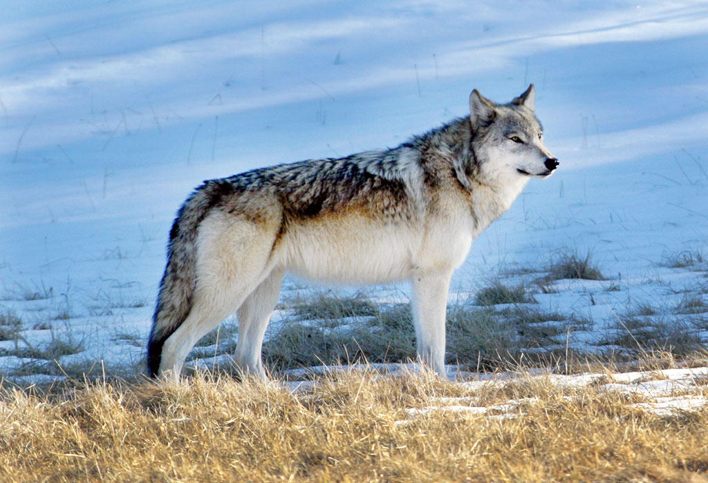
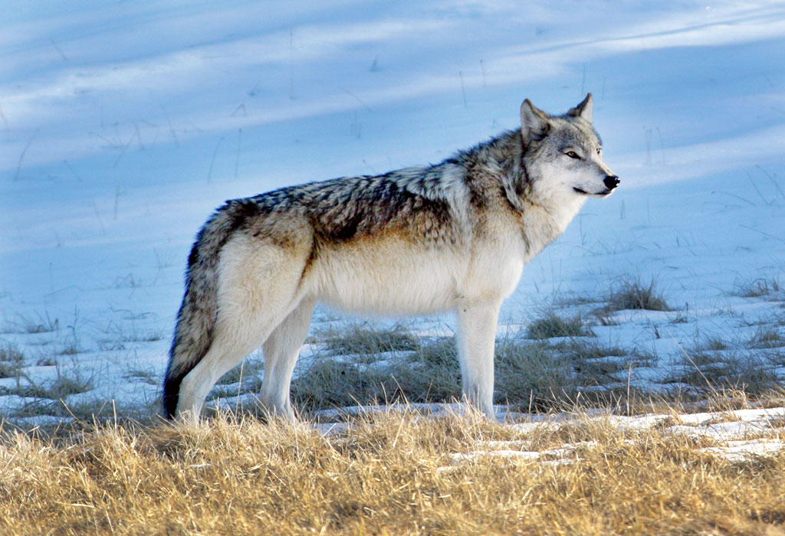

60 km/h
30 - 80 kg
Karnivoorid
kuni 16 aastat
Hundid elavad eri eluperioodidel kas karjas või paaridena. Karjades liiguvad hundid sügisest kevadeni. Kari moodustub vanast isas- ja emashundist ning nende eelmise ja sama aasta poegadest. Karja juht on emasloom. Perekarjad võivad talvel ühineda ka suuremateks liitkarjadeks. Tavaliselt on Eestis elava karja suurus 2–11 hunti. Vahel on karjas ka juhtpaari õed-vennad, mõnikord ka võõrad. Tavaliselt on karjas kuni 3-aastased noorloomad, just selles vanuses saavad nad täiskasvanuks ja kui nad pole haiged või nõrgad, lahkuvad nad karjast. Hundikari liigub täpses reas. Tavaliselt on reas esimene üks juhtpaarist, kuid kui lumi on väga sügav ja huntidel on raske liikuda, siis vahel osutub "teemeistriks" ka mõni nn tavahunt. Võimuredel mängib huntide juures tähtsat rolli ja iga looma positsioon karjas tehakse selgeks juba kutsikapõlves. Näiteks kui hundil on saba püsti ja kõrvad kikkis siis on hunt karja juht või kui hundi saba on jäik on ta valmis ründama. Suvel elavad poegi kasvatavad hundid paarides. Heidikutest loomad või ka üksikud "mässajatest" noored isased võivad elutseda eraklikult. Hunt on monogaamne loom, paarid püsivad kogu elu. Ka poegade eest hoolitseb hundipaar koos. Kokku saadakse sügisel, et siis juba veidi vanemaks saanud kutsikatele jahipidamist õpetada.
Haigete loomade söömine ja haiguste saamine. Inimtegevus: jahtimine ja autoliiklus. Karjavõitlused